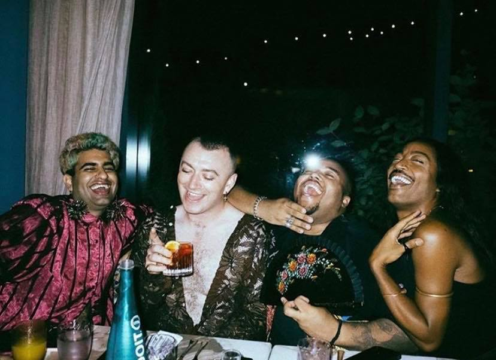
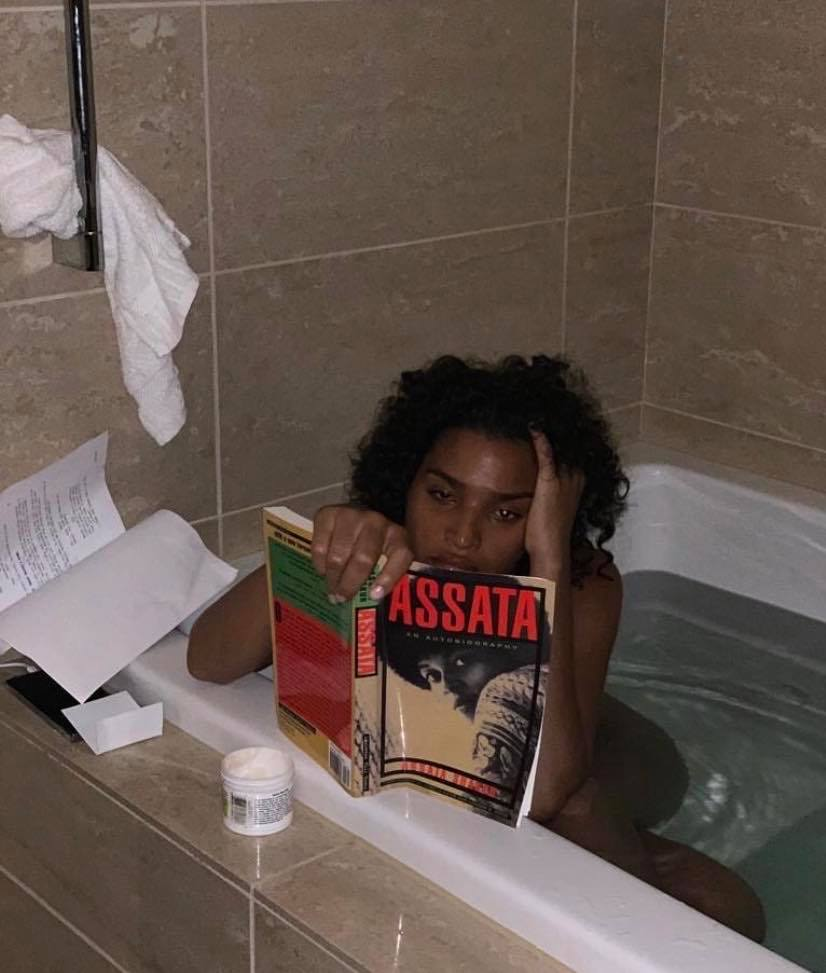
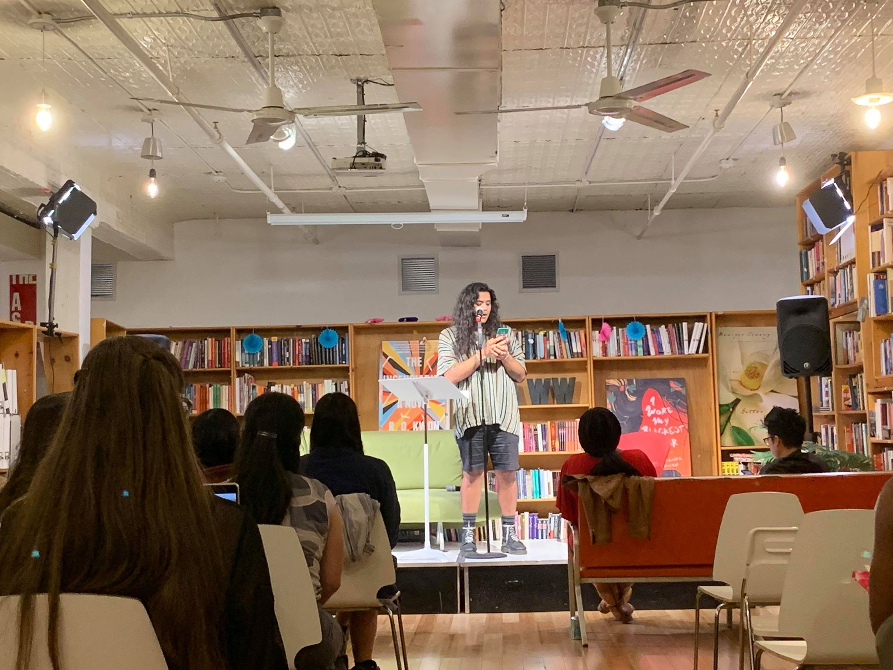

5 Trans People You Need To Know This Pride Month
by jason suh
Happy PRIDE, babies!
Invisibilization either happens directly (wherein certain narratives are centered) or through a reduction of someone to singular/isolated identities. Often times, this materializes in queer erasure.
Invisibilization also happens through tokenization, where marginalized people are invited into spaces only as whole representatives of their identities and often for ‘diversity’ purposes. This is also woven into “PC culture” that emerges of what is “appropriate” and “appropriately presented” which will also be reflected in the design of the website and the image descriptions. I somewhat parodied the language used in “inspirational” content about queer and transgender people that often projects certain characteristics onto images and imaginations of their personhoods. I used language taken from articles I found online.
In other ways, I wanted to explore different ways queer/trans identity is erased, or ways in which there is a hierarchy even within communities (how whiteness is centered, for example) & ways that these descriptions are not super helpful for anyone involved, except (as I mentioned before) for audiences that are non queer/trans.
Image 1: Sam Smith bravely and happily blurs gender lines with friends -- with a drink in hand!

(Source: @AlokVMenon on IG)
Image 2: A young and confident model dressed boldly in all-yellow sits in a wheelchair. Fierce!

(Source: @willyumbeck on IG)
Image 3: Actress Indya Moore (Angel Evangelista in the FX series Pose) sits in a bathtub naked and stares intently at a book! No time off in Hollywood!

(Source: @indyamoore on IG)
Image 4: Up-and-coming artist Moncho Alvarado on stage at a niche New York literature space.

(Source: jason suh)
Image 5: What a drastic change! Trans guy seems a lot happier after two years of injecting himself with testosterone hormone on a weekly basis, and he audio-recorded all of it!
(Source: jason suh)